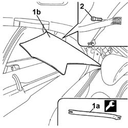

7040H46 Left or right rear pillar upper trim (one) - R.R.
- Path
- Procedures > 70 FITTINGS > 7040 BODY INTERIOR UPHOLSTERY AND TRIM > 7040H ROOF PANEL AND PILLAR LINING > 7040H46 Left or right rear pillar upper trim (one) - R.R.
- Kind
- repair procedure (removal / refitting; the operation number is the code)
- Applies to
- all engines; all production periods
- Interactive page
- https://sloeber94.github.io/elrnDB-lThss/en/#/458481
Applies to: all engines; all production periods
Applies to: all engines; all production periods
 Removing
Removing
 Refitting
Refitting1. Use the tool (1a) to release the trim (1b) from the housing.
 | Description | Code | Function |
|---|---|---|---|
1a | Knife | 1.878.077.000 | Removing rear pillar cover |
2. Undo the bolt and remove the trim.

Applies to: all engines; all production periods
Refitting
Removing- Tighten the bolt and fit the trim in place.
- Connect the battery leads.
Topics that link to this page (18)
- 5505C41 PASSENGER COMPARTMENT built in WIRING - R.R.
- 5550D16 third brake light - r r
- 5570T98 REAR SPEAKER (one), lh or rh - r.r.
- 5580C50 Head Bag module (one), left or right - R.R.
- 5580E75 PASSIVE ENTRY AERIAL on rearscreen base crossmember - R.R.
- 7025B10 Boot lid - Realignment
- 7025B22 Boot LID HINGES (one), left or right - R.R. with lid removed
- 7030B12 SUN ROOF (assembly) - R.R.
- 7030B46 DRIVE CABLE (one), left or right - R.R.
- 7030B52 Sun roof glass support JOINTS/SLIDES - R.R.
- 7035B14 Rearscreen (bonded) GLASS - R.R. for Replacement - Includes cleaning housing in bodyshell
- 7040H16 Roof LINING for versions with sun roof - R.R.
- 7040H44 Left or right rear pillar lower trim (one) - R.R.
- 7040H80 REAR PARCEL SHELF - R.R.
- 7065B08 Rear seat belt (one) with pretensioner on reel, left or right - R.R.
- 7065B18 Centre rear SEAT BELT - R.R.
- 7065C25 Electric sun blind motor - R.R.
- 7065C26 Sun blind for electric rearscreen - R.R.